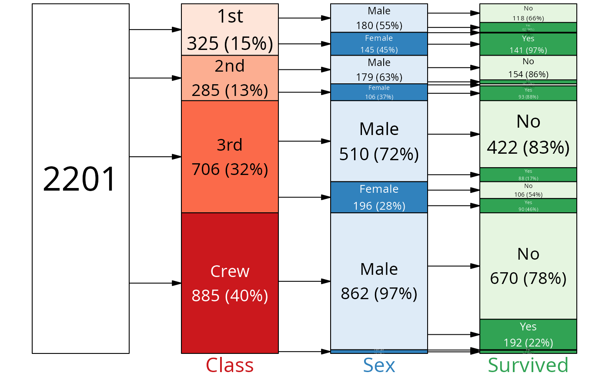
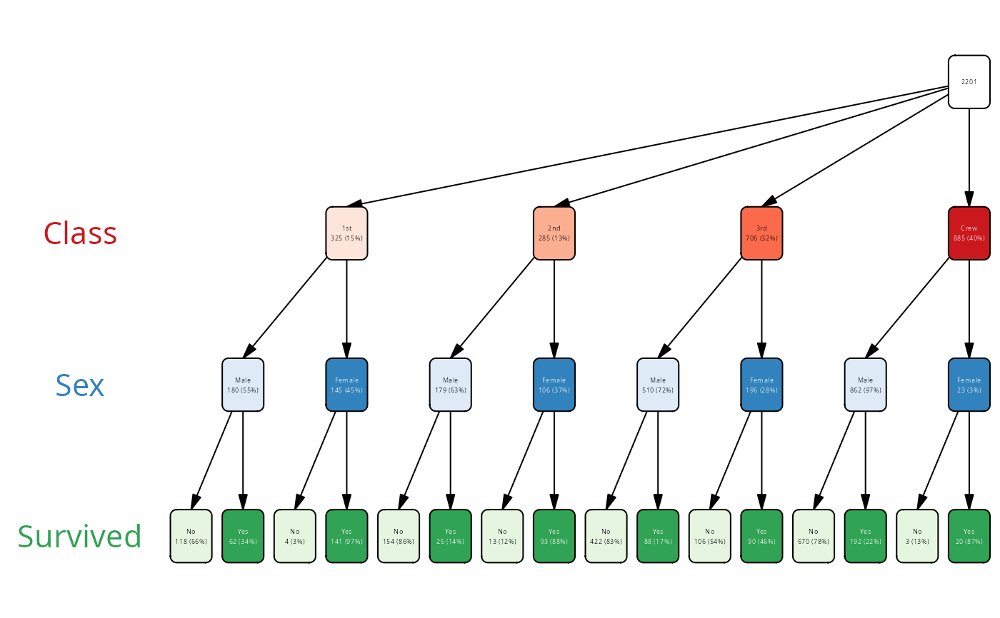

Prepare a layout for plotting a vtree
add_layout.RdA layout function for vtree adds several columns to both the nodes and edges data frame which specify the positions and sizes of the nodes and edges in the plot.
Usage
add_layout(
vtree,
layout = c("regular", "proportional", "tight", "flushed_left", "flushed_right",
"sankey"),
layout_func = NULL,
dir = "lr",
lwidth = NA,
lheight = NA,
varspace = NULL,
varsize = NULL,
show_root = TRUE
)Arguments
- vtree
A vtree object
- layout
The layout type, "regular", "tight", "flushed_left", "flushed_right" or "proportional"
- layout_func
A custom layout function.
- dir
The direction of the layout, either "lr" (left to right), "rl" (right to left), "tb" (top to bottom), or "bt" (bottom to top)
- lwidth, lheight
The width and height of the nodes, as the fraction of the available space. If NA, a sensible preset is chosen.
- varspace
named numerical vector with relative spaces for each variable. The names must include all variables present in the tree plus "root". Space describes the total amount of horizontal or vertical (for vertical layouts) space allocated to a variable.
- varsize
named numerical vector with relative sizes for each variable. The names must include all variables present in the tree plus "root". Size describes the actual horizontal or vertical (for vertical layouts) size of the nodes. It is cumulative with lwidth.
- show_root
Whether to show the root node in the layout.
Details
The builtin layouts are as follows:
"regular" - a regular layout in which all nodes have the same width and height, and the nodes are evenly spaced along the y-axis;
"flushed_left" and "flushed_right" are the same as "regular", but flushed to one side (left or right in horizontal plots, and top / bottom in the vertical plots);
"proportional" - a layout in which the height of each node is proportional to the number of observations in that node, and the nodes are spaced along the y-axis according to their cumulative frequencies.
Custom layouts
You can also provide a custom layout function. The function should take a the following arguments: vtree, dir, lwidth, lheight, varspace, varsize, show_root. It must return a vtree object with following additional columns in the nodes data frame:
x, y: the coordinates of the center of the node
width, height: the width and height of the node
In addition, it can have the "shape" column which specifies the shape of the node to use. It can be "rectangle" or "roundrectangle". If not specified, the default is "roundrectangle".
The function should be called from add_layout(), such that the layout is transformed according to the dir argument and gets converted to the vtree_layout class.
In the edge data frame, the following additional columns should be added:
x1, y1: the coordinates of the start of the edge
x2, y2: the coordinates of the end of the edge
Examples
vt <- vtree_from_freqtable(Titanic, Class, Sex, Survived)
add_layout(vt, layout = "regular", dir = "lr") |> tibble::as_tibble()
#> # A tibble: 29 × 25
#> path node_id node_key parent parent_id path_l level node_col node_val
#> <chr> <int> <chr> <chr> <int> <list> <dbl> <chr> <chr>
#> 1 root 1 node_1 NA NA <lgl [1]> 0 root ""
#> 2 Class… 2 node_2 root 1 <named list> 1 Class "1st"
#> 3 Class… 3 node_3 root 1 <named list> 1 Class "2nd"
#> 4 Class… 4 node_4 root 1 <named list> 1 Class "3rd"
#> 5 Class… 5 node_5 root 1 <named list> 1 Class "Crew"
#> 6 Class… 6 node_6 Class… 2 <named list> 2 Sex "Male"
#> 7 Class… 7 node_7 Class… 2 <named list> 2 Sex "Female"
#> 8 Class… 8 node_8 Class… 3 <named list> 2 Sex "Male"
#> 9 Class… 9 node_9 Class… 3 <named list> 2 Sex "Female"
#> 10 Class… 10 node_10 Class… 4 <named list> 2 Sex "Male"
#> # ℹ 19 more rows
#> # ℹ 16 more variables: n <int>, tot_n <int>, missing <int>, freq <dbl>,
#> # denom <int>, leaf <lgl>, size <dbl>, offset <dbl>, offset_tot <dbl>,
#> # full_w <dbl>, width <dbl>, x <dbl>, height <dbl>, full_h <dbl>, y <dbl>,
#> # shape <chr>
# the layout parameter from plot() is passed on to add_layout()
plot(vt, layout="proportional")

plot(vt, layout="flushed_right", dir="tb")
